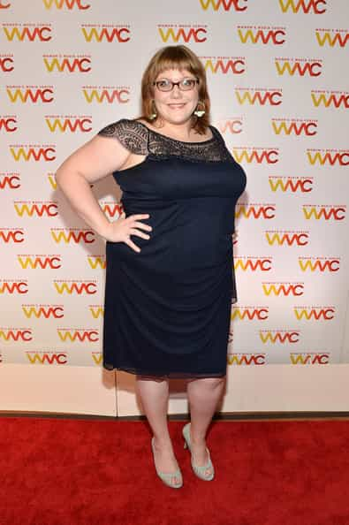

Daryush "Roosh" Valizadeh created ROK in October 2012. You can visit his blog at RooshV.com or follow him on Twitter and Facebook.


You can easily predict the ideology of someone on the liberal-conservative spectrum by how they look. This is universal not just in Western countries but also in more traditional parts of the world.
Liberals tend to be ugly, fat, and with low muscle mass when compared to the societal average. I don’t claim this to cause insult, but it’s clear that liberalism is an ideology that attempts to take from the strong, beautiful, and talented to give to the ugly, weak, and talentless. If you are strong yourself, you would not want to involuntarily donate the fruits of your labor to those who are weak, especially if they are outside of your tribe, meaning that average or below average individuals naturally gravitate towards liberalism.
If a woman is ugly or fat, she wants social policies that allow her to get more attention from elite males while less goes to women who are more beautiful or lovely than her. If you are a man who has puny muscles and testosterone levels, you will want policies that take from stronger men mostly out of your own jealousy and feelings of inferiority. You don’t want them to succeed because of abilities, talents, or attributes they have that you don’t.

Most exceptions to this rule can be easily explained by income. If a man has small muscles but makes over $200,000 a year, he will lean conservative (unless he’s Jewish, where he will continue favoring liberal policies since they typically hinder anti-Semitism).
If a girl is not happy in life because she’s not getting attention from men, or has a boyfriend with an effeminate manner, she will most certainly be a liberal, even in foreign countries. I have never met a foreign woman rated an 8 or above that would share a feminist idea with me, but it’s quite common to hear them from 6’s in those same countries. Liberal thought promotes the mythical idea of human equality and helps boost her self esteem into incorrectly believing that she’s just as deserving of life’s benefits as a more beautiful woman with better genetics or upbringing.
The liberal mindset doesn’t only affect mate competition, but also any sort of contest where naturals or talented individuals can beat those lacking in talent. For example, in a particular social group I was involved in, I repeatedly won a certain contest. After an unprecedented winning streak, two unattractive individuals in the group wanted to formulate a rule to specifically exclude me from competing because it was “not fair” that I kept winning. One mentioned that if she was in charge of voting, she would declare someone else the winner even if I did actually win. The lens through which a liberal views those who are better than them is to exclaim “It’s not fair!” followed by rules or policies to unfairly handicap those who are better.

If you’re not a winner, you will not support an ideology which allows winners to keep the bulk of their winnings. While I would in no way assert that American conservatives (Republicans) are winners, or even true conservatives, it’s clear that American liberals have gravitated to their ideology because it promises a social climate where their low talent, low beauty, and low muscle features are not seen in a negative way. They become “equal” to those who are obviously superior in intelligence, appearance, talent, or wealth.
It’s not uncommon for a man, as he improves himself in business and also increases his sexual market value, to gravitate from the left to the right side of the political spectrum. Otherwise, he would be going against his interests to share his hard-fought gains with those who did not work as hard as him. Therefore to understand where people fall on the political spectrum, simply look at them.
If the girl is unsightly, she’s a liberal. If she’s beautiful, she wants to be rightly rewarded for that beauty, and so will have more traditional beliefs where men undertake high mating investment to be with her. If a guy is also ugly in the sense that he’s ugly to women (has low testosterone, small muscles, low game skill, low confidence), he is also a liberal. This shortcut will make it very easy for you to identify who to avoid and who to admit into your circle of friendship.
This article was originally published on Roosh V.
Read Next: Lindy West Disease